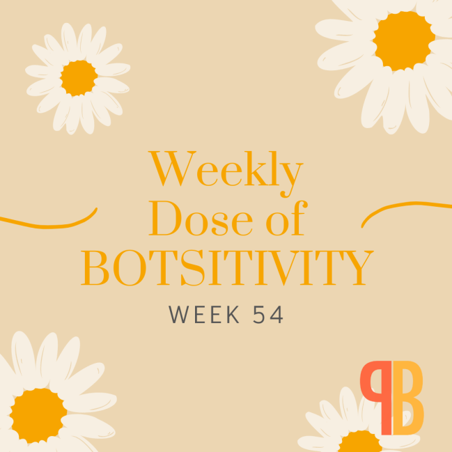
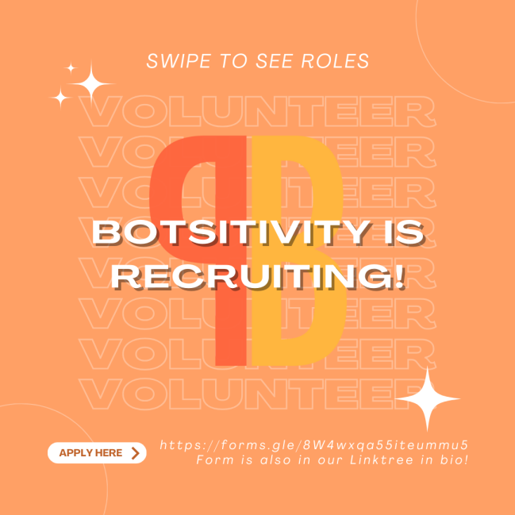
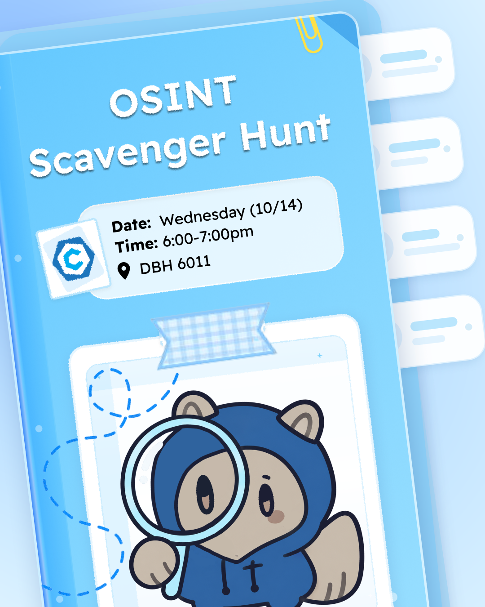
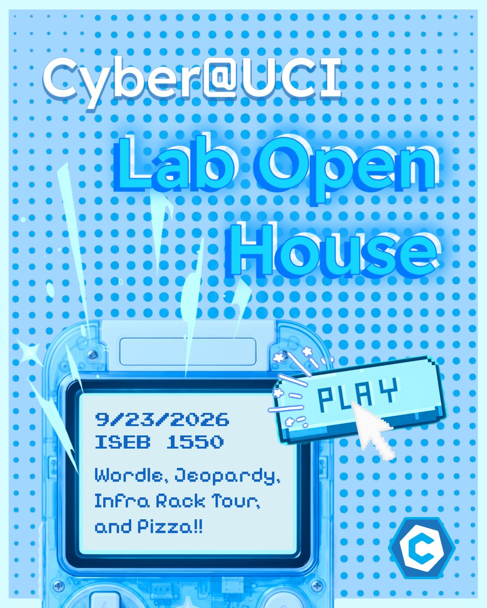
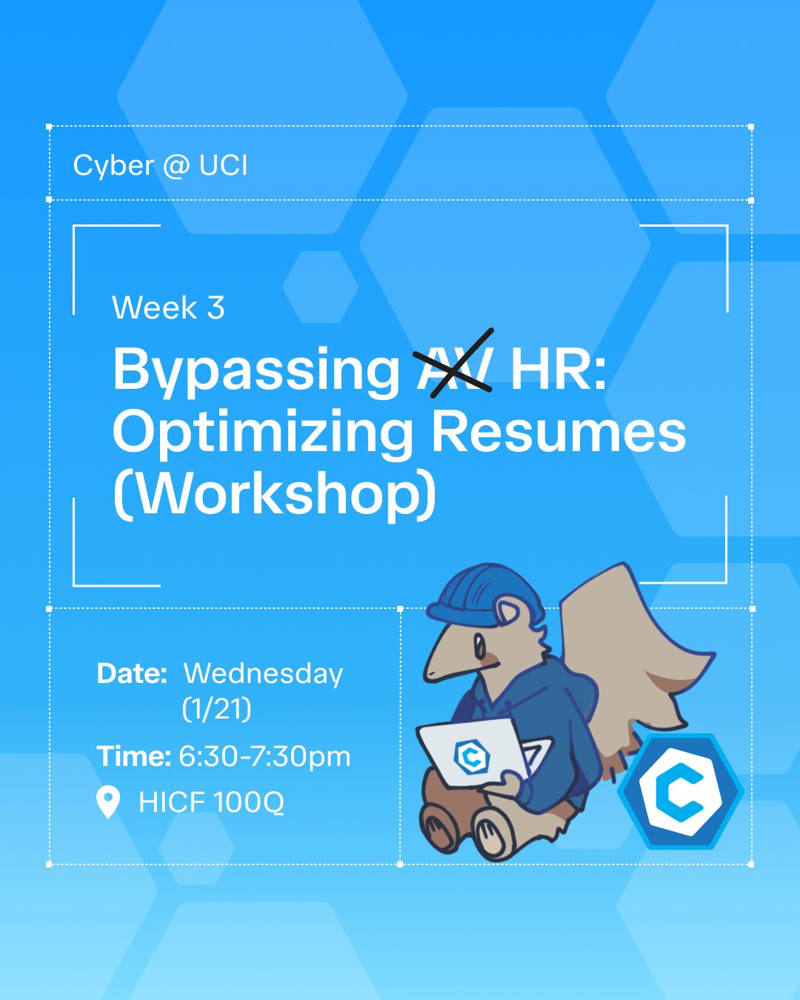

BOTSITIVITY
Designing graphics for BOTSITIVITY allowed me to explore how visual design can communicate messages surrounding mental health, well-being, and community support. I experimented with different color palettes, typography, and illustrations to create designs that felt warm, inviting, and approachable. From soft floral elements and playful accents to bold recruitment graphics, each piece served a different purpose while maintaining a cohesive brand identity. I learned how to balance visual creativity with sensitivity to the subject matter, ensuring that each design communicated its message clearly while remaining engaging.


CYBER@UCI
Designing graphics for CYBER@UCI allowed me to explore how visual design can bring a brand’s identity to life. I incorporated a consistent palette of vibrant blues, cyan accents, and white to reflect the organization’s tech-focused and futuristic aesthetic. Through bold typography, geometric patterns, and playful illustrations of CYBER@UCI’s mascot, I aimed to create graphics that felt both modern and approachable. Each design, from event announcements to workshop promotions, needed to communicate information clearly while maintaining a cohesive visual identity.


